DAG-SHORTEST-PATHS
DAG-SHORTEST-PATHS algorithm for any graph G which has s as source node and w weight:
On changing the line no 3 of that algorithm as:
3 for the first vertices taken in topologically sorted order
The process for execution of DAG-SHORTEST-PATHS:
Direct acyclic graph shortest path algorithm used to find the shortest path between the vertices of the directed graph which has no cycles. Topological sorting is the process of sorting the nodes or vertices of the graph in the linear order that is it arranges the vertices from left to right in the sequence in which they encounter. It is different from other forms of sorting.
DAG-SHORTEST-PATHS algorithm performs a topological sort on the vertices first and then performs relaxation on the edges. Topological sort ensures that edges are arranged in a linear fashion.
Now, if the edges are arranged in a linear fashion and we are
performing the task of doing relaxation then the last vertex will
have its edges already visited because if there exist edge
 then u falls before v.
then u falls before v.
Thus if we change the line no 3 in the above algorithm as: “for the first vertices taken in topologically sorted order“ then there will be no effects on the accuracy of algorithm that is the algorithm works correctly.
The Pseudo code for the DAG-SHORTEST-PATH is given in the section 24.2. The following modification is required in DAG-SHORTEST-PATH algorithm so that it is able to find the longest path in the directed acyclic graph with weighted cycle in linear time:
• Modification in the INITIALIZE-SINGLE-SOURCE procedure.
• Modification in the RELAX procedure.
The both procedure need to modify to accommodate the weighted vertices instead of the weighted edges.
Modification in the INITIALIZE-SINGLE-SOURCE procedure:
The modification is highlighted with grey color.
INITIALIZE-SINGLE-SOURCE-NEW (G, s, w)
1. for each vertex
//initializing distance of all vertexes with 
2.
//initialize all predecessor with nil
3.
//initialize the source vertex distance
4.
Modification in the RELAX procedure:
RELAX-NEW (u, v, w )
//check current distance
1. if
//update the current distance
2.
3.
Explanation:
• In the above INITIALIZE-SINGLE-SOURCE procedure, instead of initializing, program initializes to make sure that in the beginning all nodes have minimum path cost.
• In RELAX method instead of checking whether there is shortest path, program checks for longest path. For this, in line 1 of RELAX method there is sign instead of.
• Since the weight is now on the vertices the weight is now changed from w (u, v) to w[v].
• Now if program get any path which is greater than the existing path it falls in if condition of RELAX procedure and update the value and predecessor accordingly.
• Now replace the INITIALIZE-SINGLE-SOURCE and RELAX by the above modified function into the given DAG-SHORTEST-PATH Pseudo code in section 24.2 of Textbook.
• The algorithm complexity will remain linear; that is because
changing value from  to
and to
does not involve any extra loop or task.
to
and to
does not involve any extra loop or task.